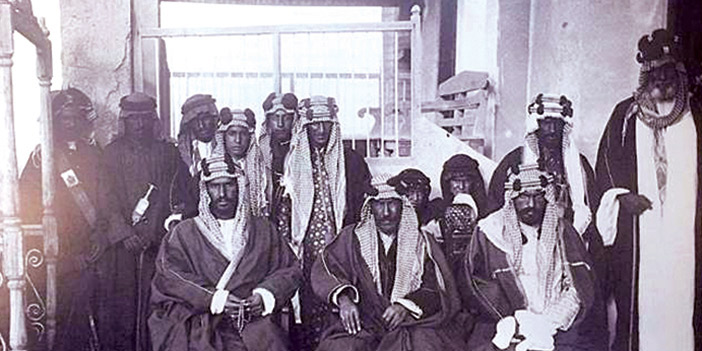
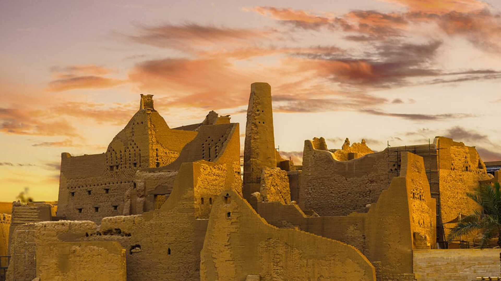
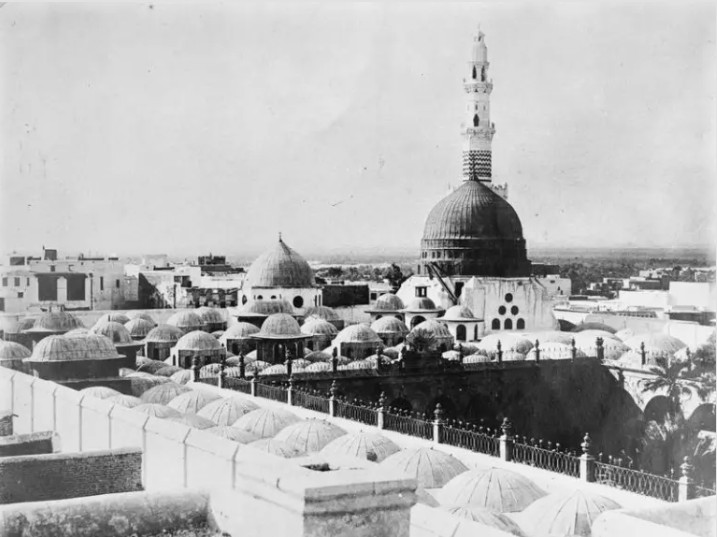

Historical Features of Saudi Arabia
Saudi Arabia has a rich history shaped by ancient civilizations, trade routes, and the rise of Islam. This page highlights key eras and landmarks that shaped the Kingdom.
Main Historical Eras

Pre-Islamic Arabia
The Arabian Peninsula was home to ancient civilizations, oases, and caravan routes that connected Arabia with the Levant, Mesopotamia, and other regions through trade.
Early Islamic Era
In the 7th century, Islam emerged in Makkah and Madinah, transforming the region into a spiritual and cultural center for Muslims around the world.


The Saudi States
Beginning in Diriyah, the Saudi states laid the foundation for unity, stability, and governance in central Arabia, shaping the political history of the region.
Modern Saudi Arabia
The Kingdom was unified under King Abdulaziz Al Saud and continues to develop through ambitious national visions that balance heritage and modernity.

Historical Regions and Landmarks

Central Region
Known for Diriyah and Riyadh, the central region represents the political and historical heart of the Saudi state.

Western Region
Home to Makkah and Madinah, this region has been a spiritual destination for millions of pilgrims over centuries.

North & Northwest
Featuring sites like AlUla and Madain Saleh, this area preserves traces of Nabatean and other ancient cultures.

East & South
Rich in coastal, desert, and mountain heritage, these regions reflect diverse lifestyles and traditional architecture.
Did You Know?
- Saudi Arabia hosts some of the oldest known trade routes in the Arabian Peninsula.
- Diriyah is recognized as a UNESCO World Heritage Site for its historical significance.
- Makkah and Madinah have welcomed pilgrims from all over the world for centuries.